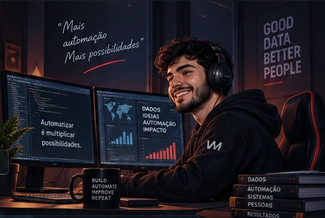
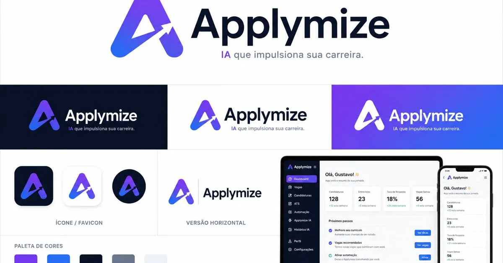
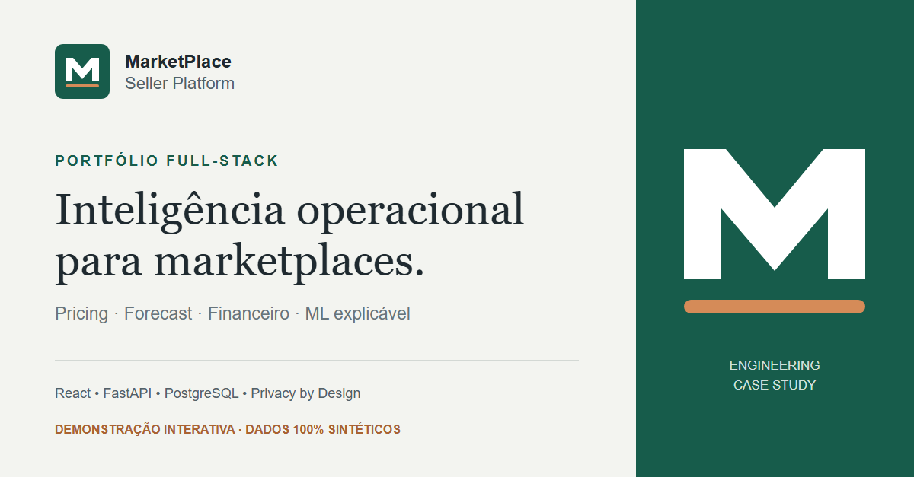
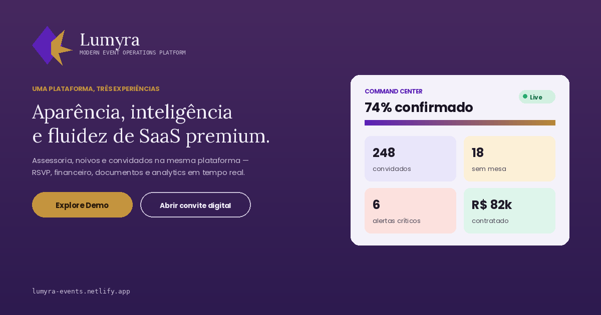
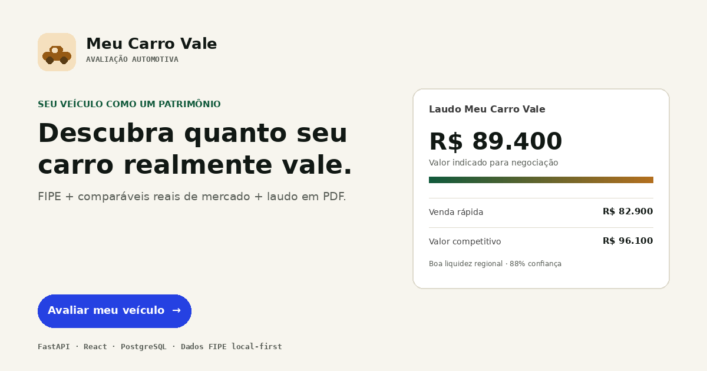
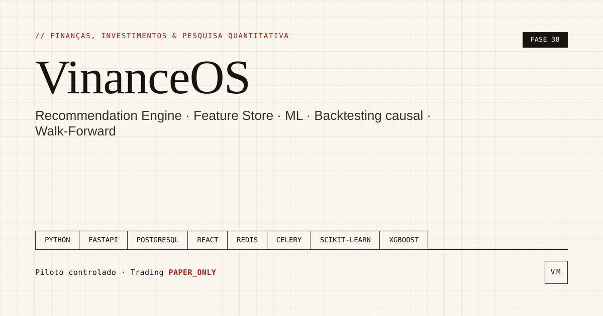
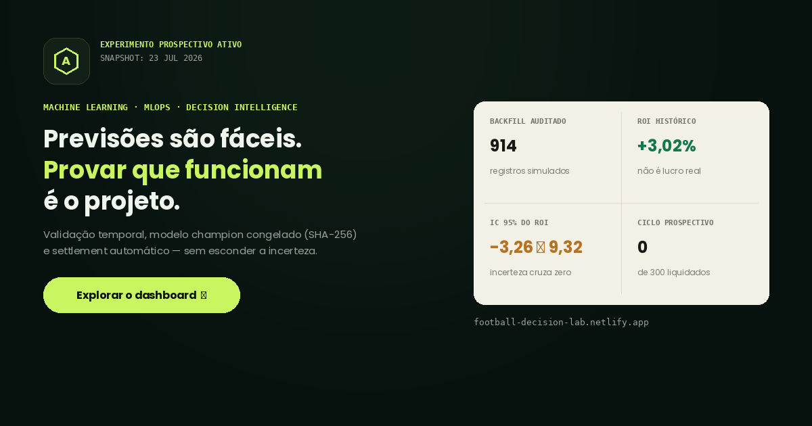

PythonAutomação e Dados
PythonAutomação e Dados// BEM-VINDO AO MEU WORKSPACE
VINICIUSMEDRADO
Dados • Automação • Sistemas
Transformo processos manuais em automações, pipelines e produtos digitais.

CV_VINICIUS_MEDRADO.pdfCurrículo atualizado · 2026
→
Pronto para abrir
DadosAutomaçãoRPABIIntegrações
“Meu currículo não é apenas histórico. É evidência do que a automação consegue entregar.”
TERMINALOUTPUTDEBUGPROBLEMSpython v3.11
$ python automation.py
✓ Focus conectado
✓ Base extraída
✓ SharePoint sincronizado
✓ Dataflow atualizado
✓ Power BI publicado
status: success
execution_time: 20s
previous_time: 13m
reduction: 97%
│ Processo concluído com sucesso.
FLUXO EM EXECUÇÃO
- 1Extrair dadosFocus / Sistemas✓
- 2TransformarPython / Power Query✓
- 3IntegrarAPIs / SharePoint✓
- 4VisualizarPower BI✓
- 5Entregar valorAutomação ativa●
// PRINCIPAIS TECNOLOGIAS
Ferramentas que transformam ideias em resultado.
PythonAutomação e Dados SQLConsultas e ETL
SQLConsultas e ETL Power BIDashboards e BI
Power BIDashboards e BI Power AutomateWorkflows
Power AutomateWorkflows SeleniumAutomação Web
SeleniumAutomação Web PostgreSQLBancos de Dados
PostgreSQLBancos de Dados APIs / RESTIntegrações
APIs / RESTIntegrações Machine LearningModelos e Previsões
Machine LearningModelos e Previsões VBAExcel e Sistemas
VBAExcel e Sistemas Power QueryTransformação
Power QueryTransformação// IMPACTO EM NÚMEROS
Resultados reais. Menos trabalho manual. Mais tempo para o que importa.
97%redução de tempo
81%menos tempo na validação
1M+CEPs em cache local
5.000+notas processadas / mês
// PROJETOS EM DESTAQUE
Soluções reais para problemas reais. Ver todos no GitHub →
Applymize
AUTOMAÇÃOAutomação de candidaturas com IA, coleta multicanal, análise de aderência e execução via Selenium.
PythonAPIsAutomação

SellerOS
DASHBOARDSGestão para sellers com integração OAuth2, pipeline raw → staging → mart e visão consolidada de operação.
FastAPISQLIntegrações

Lumyra
DADOSPlataforma de eventos com RSVP, mapa de mesas, WhatsApp e dashboards operacionais em tempo real.
PythonWebSocketAPIs

Meu Carro Vale
SISTEMASValuation automotivo com FIPE local-first, comparáveis reais, confiança e laudo premium em PDF.
APIsPythonPostgreSQL

Vinance
FINANÇASPlataforma full stack para decisão financeira, auditoria, pesquisa quantitativa e monitoramento.
FastAPIMLPostgreSQL

Football Decision Lab
MACHINE LEARNINGPesquisa e decisão esportiva com validação temporal, backtesting, modelos preditivos e governança.
PythonMLDados

// EXPERIÊNCIA
Processos → dados → automação → sistemas.
2026 — ATUAL
Analista de Dados Pleno
MSX International · Stellantis
- NPS diário automatizado de ~13 min para ~20 s.
- Pipeline Focus → Python/Selenium → SharePoint → Power BI.
- Recuperação de dashboards corporativos com DAX e Power Query.
2023 — 2026
Analista Administrativo
Conduent · GM Brasil
- Plataforma interna de validação com redução de 81% no tempo.
- Inteligência documental, OCR e Human-in-the-Loop.
- Oracle CRM, Playwright, auditoria e testes automatizados.
2020 — 2023
Operações & Financeiro
Infosys / Conduent · GM Brasil
- Automações em VBA e Access para processos fiscais.
- +5.000 notas processadas em um mês sem erros.
- Mais de 20 mil notas de importação tratadas em backlog.
// SOBRE
Como penso e como construo.
Automação para reduzir atrito.
Dados para decidir melhor.
Meu trabalho começa no processo: entendo a operação, mapeio gargalos, conecto sistemas e transformo tarefas repetitivas em fluxos rastreáveis. Hoje atuo entre automação, dados, integrações e produtos digitais.
BASESanto André · SP · Brasil
FORMAÇÃOTecnólogo em Ciência de Dados · Em andamento
FOCOAutomação · RPA · Dados · Sistemas
ECOSSISTEMAStellantis · GM · MSX · Conduent
VAMOS CONVERSAR?
Vamos construir algo incrível juntos.
Novos desafios, parcerias e oportunidades são sempre bem-vindos.
“Grandes resultados
são construídos em equipe.”